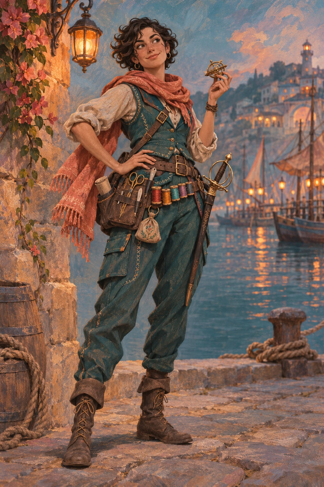
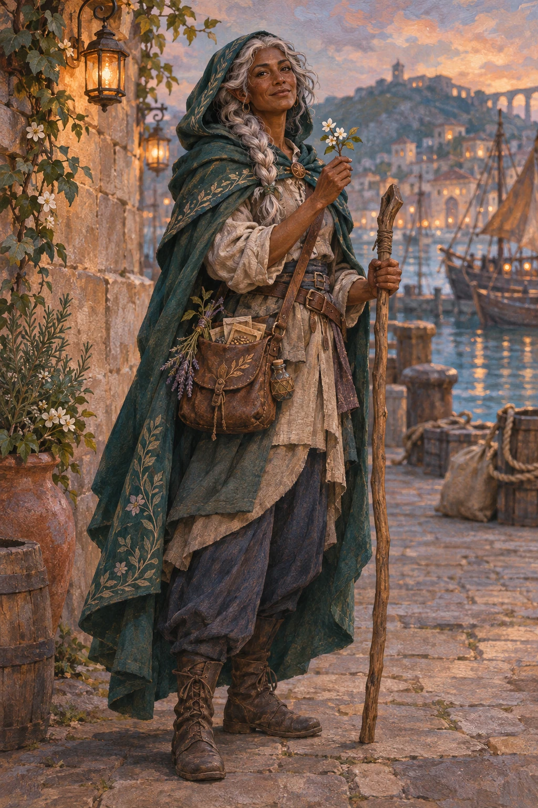
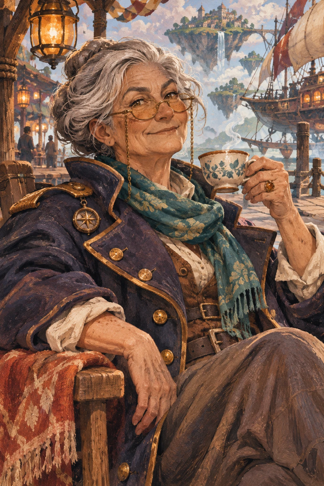
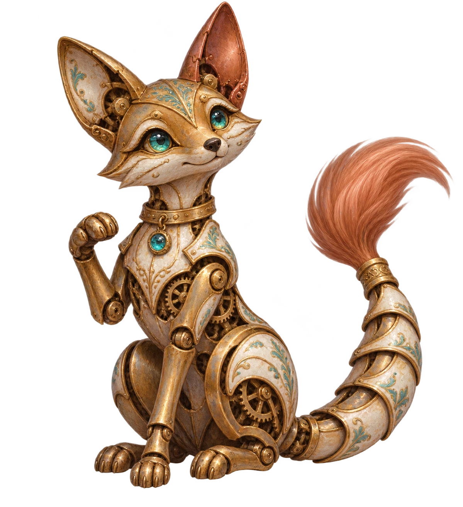
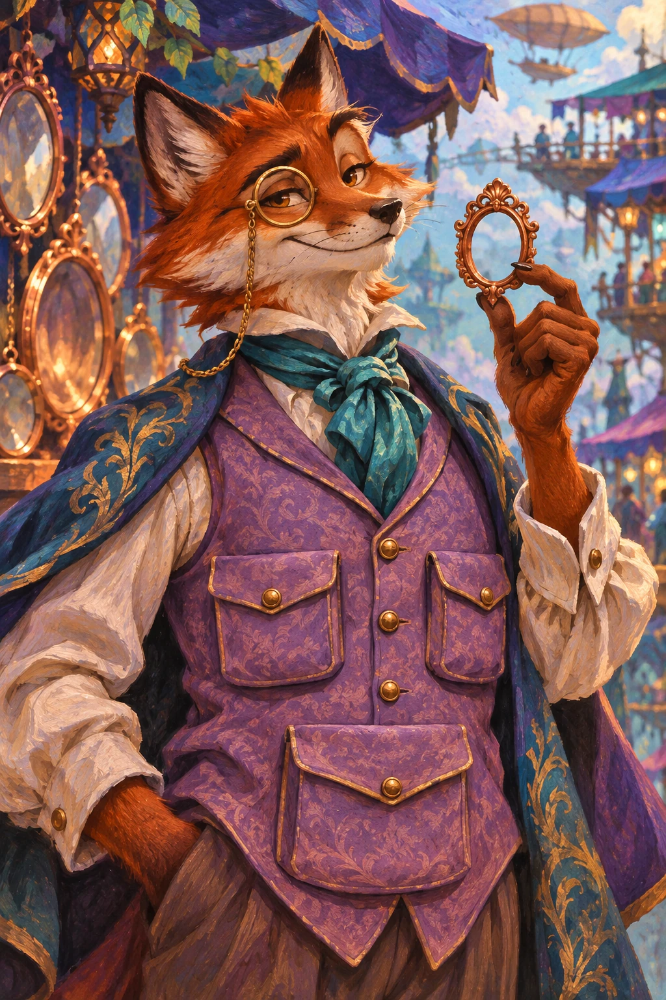
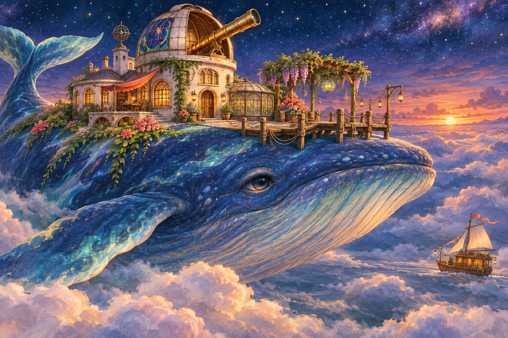

Попутчики и знакомые
Печатайте при масштабе 100%. Круги диаметром 28 мм подходят для домашних подставок. Скрывайте будущих персонажей до знакомства.













Печатайте при масштабе 100%. Круги диаметром 28 мм подходят для домашних подставок. Скрывайте будущих персонажей до знакомства.





